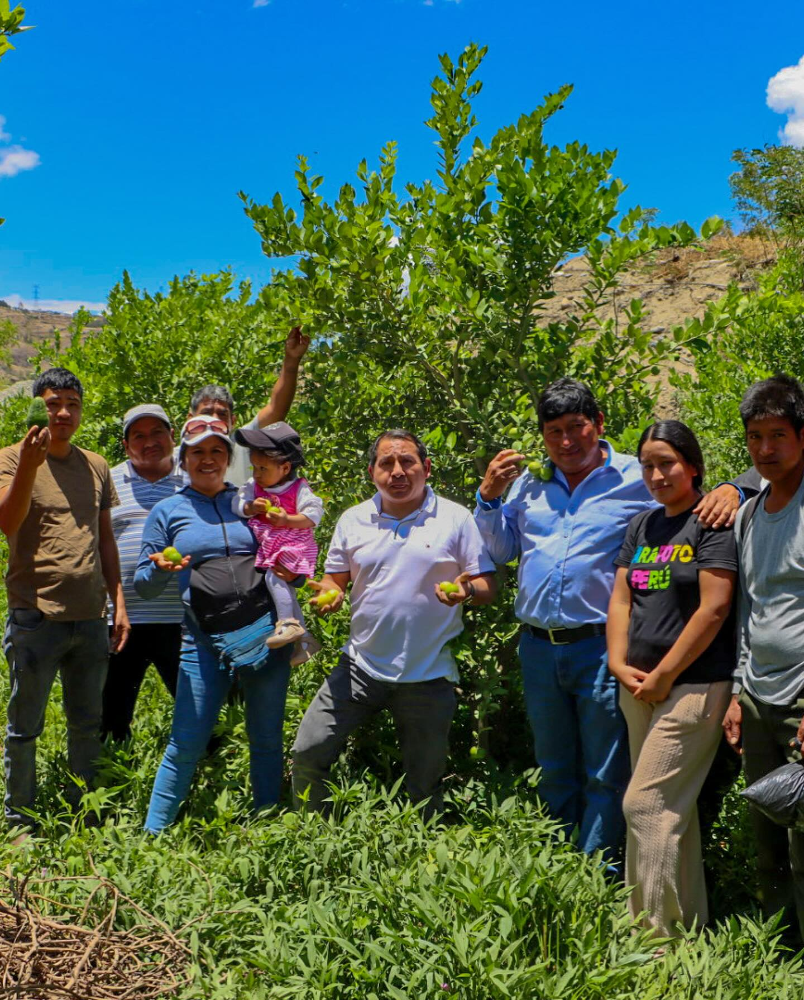
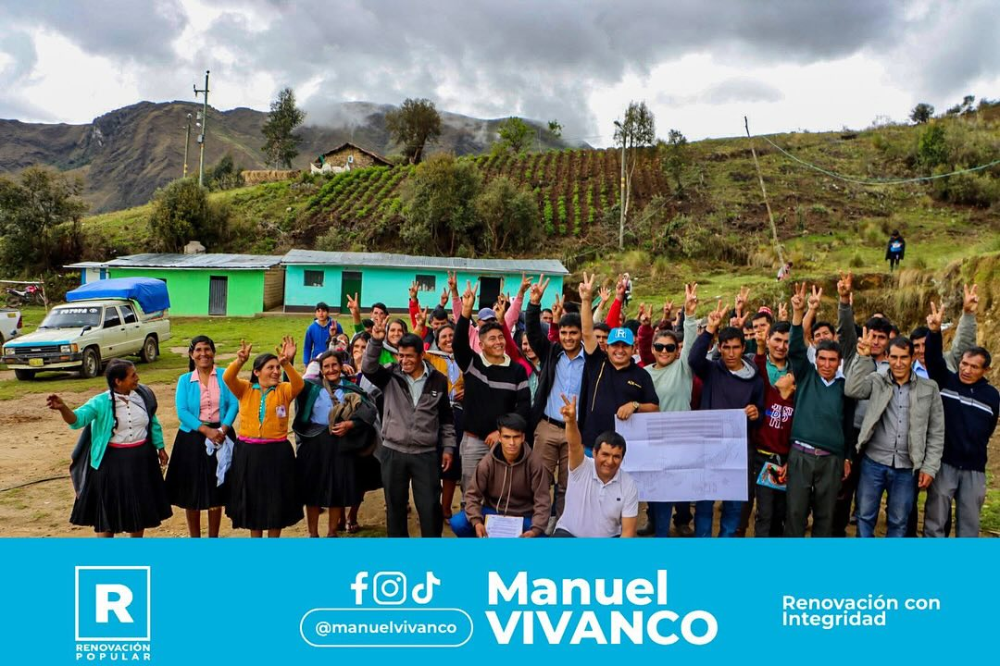
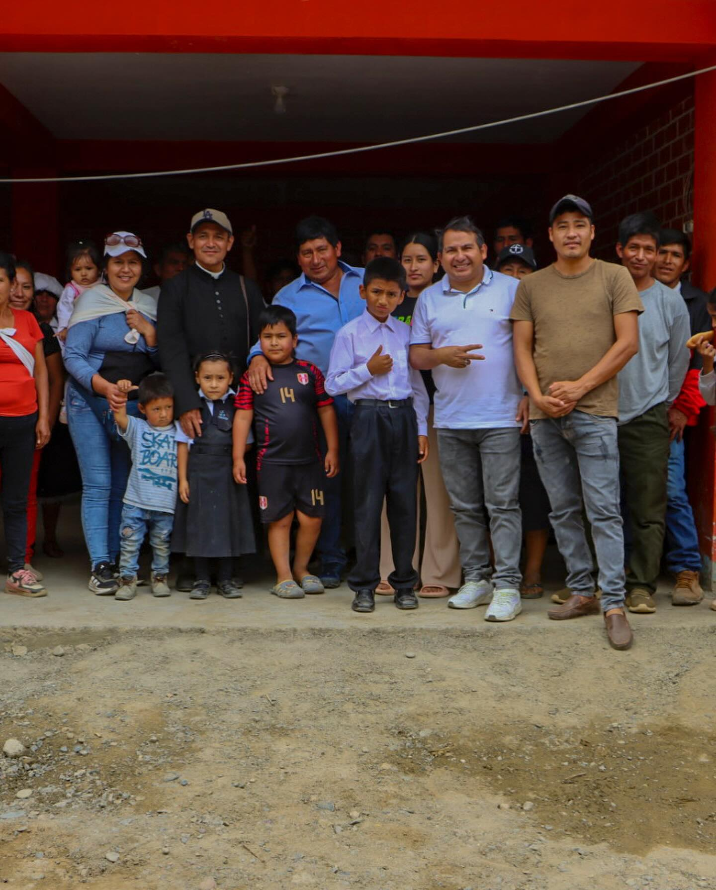
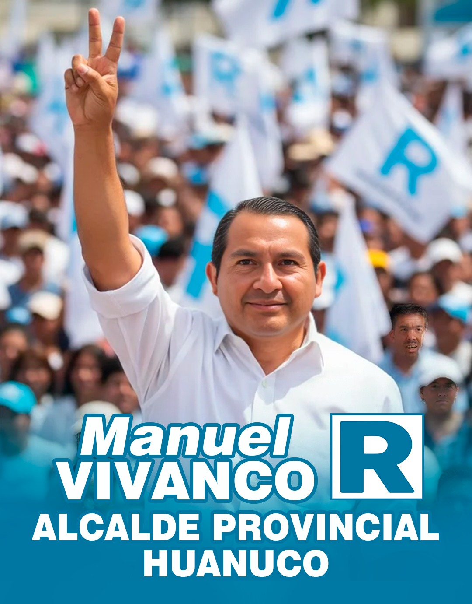

"Un solo equipo, un mismo destino: el desarrollo de Huánuco"
Huanuqueño de nacimiento, con profundas raíces en nuestra tierra. Profesional comprometido con la transparencia y la honestidad, Manuel ha dedicado su vida al servicio comunitario y al desarrollo de proyectos sostenibles para nuestra región.

Gestión de infraestructura educativa local.

Implementación de programas de seguridad vecinal.

Fomento de la producción agrícola en la periferia.
Gestión de infraestructura educativa local.
Implementación de programas de seguridad vecinal.
Fomento de la producción agrícola en la periferia.

📍 Plaza de Armas
Presentación del plan de gobierno.
📍 Paucarbamba
Recorrido y escucha vecinal.
📍 Cayhuayna
Inauguración de base distrital.
📍 UNHEVAL
Debate de propuestas técnicas.
📍 Estadio Heraclio Tapia
Fiesta de la democracia.
Presencia activa en toda la provincia de Huánuco.
Manuel Vivanco compartió sus propuestas con los comerciantes, enfocándose en la modernización de los centros de abasto.
Leer másSe presentó el plan "Barrio Seguro" que integra cámaras de última generación y mayor patrullaje integrado.
Leer másReunión con líderes comunales para fortalecer la cadena productiva y asegurar precios justos para los agricultores.
Leer másTú eres parte fundamental de este proyecto. Déjanos tus datos y trabajemos juntos por Huánuco.